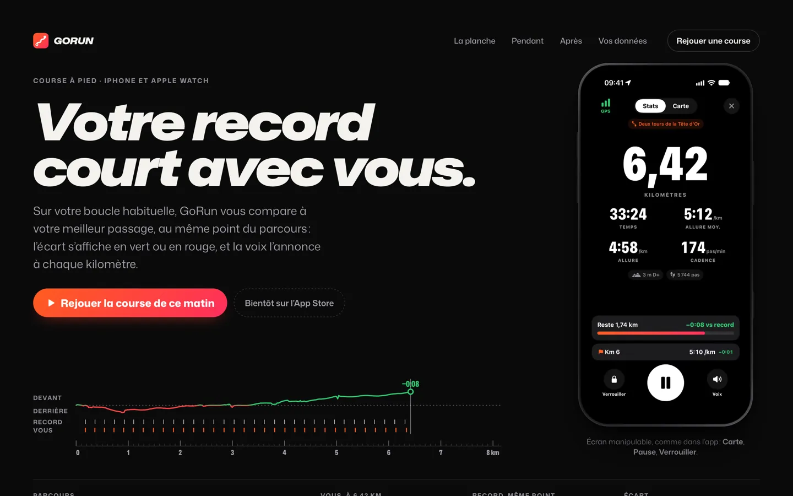

GoRun
App iPhone et Apple Watch · Course à pied
GoRun vous fait courir contre votre propre record.
SwiftUI, HealthKit, watchOS, Live Activities
L’écran d’accueil du studioTouchez une app pour l’ouvrir
Matheo Merchez Fondateur de MTX Studio
L’écran d’accueil du studioTouchez une app pour l’ouvrir
Réalisations
Bientôt sur l’App Store
GoRun vous accompagne dans vos courses. MTX Viewer vous permet d’explorer un site depuis votre iPhone ou iPad. Triade réunit texte, tableur et présentation. Découvrez les trois projets avec leurs aperçus et démos.
3 réalisations

App iPhone et Apple Watch · Course à pied
GoRun vous fait courir contre votre propre record.
SwiftUI, HealthKit, watchOS, Live Activities


App iPhone et iPad · Développement web
MTX Viewer inspecte un site web sur iPhone et iPad, sans Mac.
SwiftUI, WebKit


App iPhone et iPad · Bureautique
Triade réunit texte, tableur et présentation dans une seule app.
SwiftUI, UIKit, Foundation Models, App Intents
Tout ce qui est montré ici existe : les captures sortent des apps, les démos tournent dans la page.
Une app en tête ? Écrire au studio
Studio
MTX Studio conçoit des applications qui rendent un service concret. Chaque projet est pensé pour être agréable à regarder, facile à comprendre et simple à utiliser.
Des idées utiles transformées en applications pour le sport, les voyages, la maison et le travail.
Des parcours clairs et des détails soignés pour trouver rapidement ce qu’il vous faut.
Explorez les aperçus et les démos pour découvrir chaque application avant de l’essayer.
De l’icône au site
De la première idée aux derniers détails : chaque application est conçue avec soin.
Une question ou une idée d’application ? MTX Studio vous accompagne de la première discussion jusqu’à la mise en ligne.
Les outils du studioFrameworks Apple et web
Questions
L’essentiel sur les applications, les appareils compatibles et vos idées de projet. Une autre question ? Écrivez au studio.
MTX Studio conçoit et développe des applications natives pour iPhone, iPad, Apple Watch et Mac, écrites en Swift. Chaque app reçoit aussi son propre site, avec sa police, ses couleurs et des démos qui répondent comme l’app.
MTX Studio a été fondé par Matheo Merchez, qui imagine et développe les applications du studio. Votre projet est suivi directement avec lui, du premier échange à la mise en ligne.
Pour l’iPhone, l’iPad, l’Apple Watch et le Mac, avec les outils d’Apple : SwiftUI, UIKit, AppKit, WidgetKit, HealthKit, MapKit ou StoreKit 2. Les sites, eux, sont écrits en HTML, CSS et JavaScript.
Oui. MTX Studio étudie les idées d’applications et accompagne leur conception, de la définition du besoin à la mise en ligne.
Les apps arrivent bientôt sur l’App Store. En attendant, chaque site propose des démos qui tournent dans la page, et les captures sortent des apps elles-mêmes, remplies de données de démonstration.
Écrivez à mtxstudio@proton.me en décrivant l’app que vous avez en tête : à quoi elle sert, pour quels appareils, et pour quand.
Contact
Un projet en tête ? Parlons de l’idée, de vos besoins et de la meilleure façon de la concrétiser.